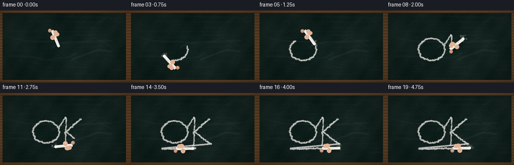
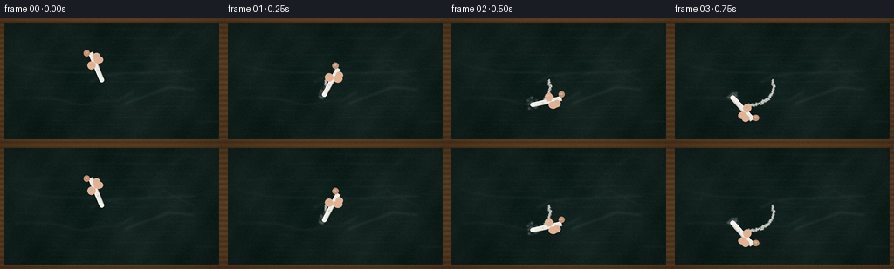

CODING AGENTS AS PIXEL WORLD MODELS
traex/Seed-2.1-Pro-0915 · phygen_031
点击播放 · 原生 RGB 像素
逐轮保存的候选
回放视频、检查图与代码变化。
每份候选均可单独播放。实际图片检查记录在下方工具轨迹中。
候选 01播放与检查图
点击播放 · 原生 RGB 像素


展开代码变化
--- 上一保存版本
+++ 本次保存版本
@@ -0,0 +1,305 @@
+"""Procedural t2v clip: white chalk writing on a rough dark blackboard.
+
+Renders at SS=3 supersampling then downsamples to 256x144. No external
+assets, models, or weights are used -- only numpy and PIL geometry.
+"""
+import numpy as np
+from PIL import Image, ImageDraw, ImageFilter
+
+import artifact_io
+
+rng = np.random.default_rng(20261110)
+
+W, H, N, FPS = 256, 144, 20, 4.0
+SS = 3
+w, h = W * SS, H * SS
+
+
+# ---------------------------------------------------------------- board base
+def make_board():
+ """Dark green-black board with mottled texture and faint old chalk ghost."""
+ base = np.zeros((h, w, 3), dtype=np.float32)
+ base[..., 0] = 18
+ base[..., 1] = 34
+ base[..., 2] = 30
+ # slow color/brightness mottling
+ gy, gx = np.mgrid[0:h, 0:w]
+ cloud = (
+ np.sin(gx * 0.011 + gy * 0.007)
+ + 0.6 * np.sin(gx * 0.027 - gy * 0.019 + 2.0)
+ + 0.4 * np.sin(gx * 0.061 + gy * 0.043)
+ )
+ base += cloud[..., None] * 3.2
+ # fine grain
+ grain = rng.normal(0, 4.5, (h, w, 1)).astype(np.float32)
+ base += grain
+ # faint horizontal wipe streaks
+ for _ in range(90):
+ y = rng.integers(0, h)
+ x0 = rng.integers(0, w)
+ length = rng.integers(w // 6, w // 2)
+ shade = rng.uniform(4, 13)
+ base[y, x0:min(w, x0 + length)] += shade
+ img = Image.fromarray(np.clip(base, 0, 255).astype(np.uint8))
+ img = img.filter(ImageFilter.GaussianBlur(0.55 * SS))
+ arr = np.asarray(img).astype(np.float32)
+ # faint ghost writing from a previous session
+ ghost = Image.new("L", (w, h), 0)
+ gd = ImageDraw.Draw(ghost)
+ for _ in range(5):
+ pts = []
+ x = rng.integers(w * 0.05, w * 0.8)
+ y = rng.integers(h * 0.15, h * 0.85)
+ for _ in range(rng.integers(6, 12)):
+ pts.append((x, y))
+ x += rng.integers(14, 40) * SS
+ y += rng.integers(-10, 11) * SS
+ if x > w * 0.97:
+ break
+ gd.line(pts, fill=int(rng.integers(14, 30)), width=rng.integers(1, 3) * SS)
+ ghost = ghost.filter(ImageFilter.GaussianBlur(1.1 * SS))
+ arr += np.asarray(ghost, dtype=np.float32)[..., None] * 0.55
+ # wooden frame
+ frame = np.zeros((h, w), dtype=np.float32)
+ t = int(5 * SS)
+ frame[:t] = 1
+ frame[-t:] = 1
+ frame[:, :t] = 1
+ frame[:, -t:] = 1
+ wood = np.zeros_like(arr)
+ wood[..., 0], wood[..., 1], wood[..., 2] = 96, 66, 38
+ woodgrain = (np.sin(gy * 0.35) * 8 + rng.normal(0, 3, (h, w)))[..., None]
+ wood = np.clip(wood + woodgrain, 0, 255)
+ arr = np.where(frame[..., None] > 0, wood, arr)
+ # subtle vignette
+ vx = (gx / w - 0.5) ** 2 + (gy / h - 0.5) ** 2
+ arr *= (1 - vx * 0.55)[..., None]
+ return np.clip(arr, 0, 255).astype(np.uint8)
+
+
+board = make_board()
+
+
+# ------------------------------------------------------------- writing path
+# A loose cursive "ok" style stroke plus a short underline, in board pixels.
+scale = SS
+path = []
+
+
+def bez(p0, p1, p2, p3, steps):
+ ts = np.linspace(0, 1, steps)[:, None]
+ p0, p1, p2, p3 = map(np.asarray, (p0, p1, p2, p3))
+ return ((1 - ts) ** 3 * p0 + 3 * (1 - ts) ** 2 * ts * p1
+ + 3 * (1 - ts) * ts ** 2 * p2 + ts ** 3 * p3)
+
+
+# "o" loop
+o_center = np.array([92.0, 78.0]) * scale
+rx, ry = 26.0 * scale, 22.0 * scale
+theta = np.linspace(-0.35, 2 * np.pi - 0.35, 150)
+o_pts = np.stack([o_center[0] + rx * np.cos(theta),
+ o_center[1] + ry * np.sin(theta)], axis=1)
+# connector into "k"
+conn = bez(o_pts[-1], o_pts[-1] + [18 * scale, -26 * scale],
+ [128 * scale, 48 * scale], [132 * scale, 52 * scale], 36)
+# vertical of k
+k_top = np.array([132.0, 50.0]) * scale
+k_bot = np.array([130.0, 104.0]) * scale
+kstem = np.linspace(k_top, k_bot, 70)
+# two diagonals from the middle
+kmid = np.array([131.0, 78.0]) * scale
+k_d1 = bez(kmid, kmid + [6 * scale, -2 * scale],
+ [152 * scale, 56 * scale], [162 * scale, 52 * scale], 40)
+k_d2 = bez(kmid, kmid + [6 * scale, 2 * scale],
+ [154 * scale, 98 * scale], [166 * scale, 102 * scale], 40)
+underline = np.stack([
+ np.linspace(66 * scale, 168 * scale, 90),
+ np.linspace(112 * scale, 110 * scale, 90)], axis=1)
+
+segments = [o_pts, conn, kstem, k_d1, k_d2, underline]
+path_pts = np.vstack(segments)
+seg_len = [len(s) for s in segments]
+
+# cumulative arc length so motion has roughly even speed
+diff = np.diff(path_pts, axis=0, prepend=path_pts[:1])
+cum = np.concatenate([[0], np.cumsum(np.hypot(diff[1:, 0], diff[1:, 1]))])
+total_len = cum[-1]
+
+
+def point_at(frac):
+ """Point + unit tangent at fraction of the whole stroke."""
+ d = np.clip(frac, 0, 1) * total_len
+ i = min(np.searchsorted(cum, d) - 1, len(path_pts) - 2)
+ i = max(i, 0)
+ span = cum[i + 1] - cum[i]
+ t = 0 if span == 0 else (d - cum[i]) / span
+ p = path_pts[i] * (1 - t) + path_pts[i + 1] * t
+ tangent = path_pts[i + 1] - path_pts[i]
+ norm = np.hypot(*tangent)
+ tangent = tangent / norm if norm else np.array([1.0, 0.0])
+ return p, tangent
+
+
+# ------------------------------------------------------------- chalk texture
+# Per-pixel static "scratchiness" sampled along the trail, plus jittered
+# perpendicular offsets so the line looks pressed-on rather than vector clean.
+trail_jitter = rng.normal(0, 0.9 * scale, len(path_pts))
+# width varies with pressure
+pressure = 1.0 + 0.28 * np.sin(np.linspace(0, 9, len(path_pts))) \
+ + rng.normal(0, 0.12, len(path_pts))
+trail_pts = path_pts.copy()
+normals = np.stack([-np.gradient(path_pts[:, 1]),
+ np.gradient(path_pts[:, 0])], axis=1)
+normals /= np.maximum(np.hypot(normals[:, 0], normals[:, 1]), 1e-6)[:, None]
+trail_pts += normals * trail_jitter[:, None]
+
+# Static scratch map so already-written chalk stays put between frames.
+HOLES = rng.random((h, w))
+STATIC_GRAIN = rng.normal(0, 1.2, (H, W, 1)).astype(np.float32)
+
+
+def render_trail(frac):
+ """Chalk deposited up to frac of the path, with broken dusty edges."""
+ layer = Image.new("L", (w, h), 0)
+ d = ImageDraw.Draw(layer)
+ upto = max(2, int(frac * len(trail_pts)))
+ pts = [tuple(p) for p in trail_pts[:upto]]
+ # main body, several passes with varying width/alpha for granular look
+ for ww, aa in [(3.4 * scale, 200), (2.4 * scale, 235), (1.5 * scale, 255)]:
+ widths = np.clip(ww * pressure[:upto], 1, None)
+ for i in range(len(pts) - 1):
+ d.line([pts[i], pts[i + 1]], fill=aa, width=max(1, int(widths[i])))
+ layer = layer.filter(ImageFilter.GaussianBlur(0.35 * SS))
+ arr = np.asarray(layer, dtype=np.float32)
+ # knock holes: chalk deposits unevenly on rough board
+ holes = HOLES
+ mask = arr > 20
+ arr[mask] *= np.clip(0.55 + 0.6 * holes[mask], 0, 1.15)
+ # fine powder speckle around the stroke
+ dust = (rng.random((h, w)) > 0.9985).astype(np.float32) * 90
+ dust_img = Image.fromarray(dust.astype(np.uint8)).filter(
+ ImageFilter.GaussianBlur(0.4 * SS))
+ arr = np.clip(arr + np.asarray(dust_img, dtype=np.float32) * (arr > 10), 0, 255)
+ return arr
+
+
+# ------------------------------------------------------------- chalk + hand
+def chalk_polygon(tip, tangent, length=34 * scale, width=5.2 * scale):
+ """Tapered white chalk stick ending exactly at the writing tip."""
+ n = np.array([-tangent[1], tangent[0]])
+ end = tip - tangent * length
+ # slight taper at far end
+ return [
+ tip + n * width * 0.45,
+ tip - n * width * 0.45,
+ end - n * width * 0.5,
+ end + n * width * 0.5,
+ ]
+
+
+def render_chalk_and_hand(tip, tangent, frac):
+ img = Image.new("RGBA", (w, h), (0, 0, 0, 0))
+ d = ImageDraw.Draw(img)
+ n = np.array([-tangent[1], tangent[0]])
+ axis = -tangent # from tip toward hand
+
+ # soft contact shadow on the board
+ shadow = Image.new("L", (w, h), 0)
+ sd = ImageDraw.Draw(shadow)
+ spoly = chalk_polygon(tip + n * 1.6 * scale + [1.2 * scale, 1.6 * scale],
+ tangent)
+ sd.polygon([tuple(p) for p in spoly], fill=90)
+ shadow = shadow.filter(ImageFilter.GaussianBlur(2.2 * SS))
+ img.alpha_composite(Image.merge("RGBA", [
+ Image.new("L", (w, h), 0)] * 3 + [shadow]))
+
+ # chalk body
+ poly = chalk_polygon(tip, tangent)
+ d.polygon([tuple(p) for p in poly], fill=(238, 236, 228, 255))
+ # chalk shading: darker side + bright top edge
+ pts = np.array(poly)
+ d.line([tuple(pts[0]), tuple(pts[3])], fill=(255, 255, 250, 255),
+ width=max(1, int(1.1 * SS)))
+ d.line([tuple(pts[1]), tuple(pts[2])], fill=(196, 194, 186, 255),
+ width=max(1, int(1.1 * SS)))
+ # worn, rounded writing tip
+ d.ellipse([tip[0] - 2.6 * scale, tip[1] - 2.6 * scale,
+ tip[0] + 2.6 * scale, tip[1] + 2.6 * scale],
+ fill=(246, 244, 238, 255))
+ # a couple of chalk flecks on the stick
+ for off in (0.35, 0.62):
+ c = tip + axis * (34 * scale * off)
+ d.ellipse([c[0] - 0.8 * scale, c[1] - 0.8 * scale,
+ c[0] + 0.8 * scale, c[1] + 0.8 * scale],
+ fill=(210, 208, 200, 255))
+
+ # fingertips gripping from above-right of the stick
+ grip = tip + axis * 20 * scale
+ skin = (226, 178, 148, 255)
+ skin_dark = (196, 144, 116, 255)
+ for k, side in enumerate((1, -1, 1)):
+ c = grip + axis * (k * 7.5 * scale) + n * side * (4.6 * scale)
+ r = (4.6 - k * 0.5) * scale
+ d.ellipse([c[0] - r, c[1] - r, c[0] + r, c[1] + r],
+ fill=skin if k != 2 else skin_dark)
+ # nail hint
+ d.ellipse([c[0] - r * 0.35, c[1] - r * 0.5,
+ c[0] + r * 0.35, c[1] + r * 0.1],
+ fill=(245, 222, 205, 200))
+ # thumb pad crossing the stick
+ thumb = grip - n * 5.2 * scale + axis * 3 * scale
+ r = 5.2 * scale
+ d.ellipse([thumb[0] - r, thumb[1] - r * 0.8,
+ thumb[0] + r, thumb[1] + r * 0.8], fill=skin)
+ return img
+
+
+def render_dust_cloud(tip, frame_idx):
+ """Small chalk-dust puffs at the moving tip."""
+ layer = Image.new("L", (w, h), 0)
+ d = ImageDraw.Draw(layer)
+ local = np.random.default_rng(9000 + frame_idx)
+ for _ in range(26):
+ ang = local.uniform(0, 2 * np.pi)
+ rad = local.uniform(0, 7 * scale)
+ c = tip + [np.cos(ang) * rad, np.sin(ang) * rad - 1.5 * scale]
+ r = local.uniform(0.4, 1.4) * scale
+ d.ellipse([c[0] - r, c[1] - r, c[0] + r, c[1] + r],
+ fill=int(local.integers(40, 120)))
+ layer = layer.filter(ImageFilter.GaussianBlur(0.8 * SS))
+ rgba = Image.merge("RGBA", [Image.new("L", (w, h), 240)] * 3
+ + [layer])
+ return rgba
+
+
+# ------------------------------------------------------------------- render
+frames = []
+# ease: quick start, steady writing, slight dwell at end
+fracs = np.clip((np.arange(N) + 1) / (N - 2), 0, 1)
+fracs = np.where(np.arange(N) == 0, 0.02, fracs)
+fracs = 0.5 - 0.5 * np.cos(np.clip(fracs, 0, 1) * np.pi) # smoothstep
+
+for fi, frac in enumerate(fracs):
+ tip, tangent = point_at(frac)
+ canvas = Image.fromarray(board).convert("RGBA")
+
+ trail = render_trail(frac)
+ trail_rgb = np.zeros((h, w, 4), dtype=np.uint8)
+ t8 = trail.astype(np.uint8)
+ trail_rgb[..., 0] = np.minimum(255, t8.astype(np.int32) + 18)
+ trail_rgb[..., 1] = np.minimum(255, t8.astype(np.int32) + 16)
+ trail_rgb[..., 2] = np.minimum(255, t8.astype(np.int32) + 10)
+ trail_rgb[..., 3] = t8
+ canvas.alpha_composite(Image.fromarray(trail_rgb))
+
+ if fi > 0:
+ canvas.alpha_composite(render_dust_cloud(tip, fi))
+ canvas.alpha_composite(render_chalk_and_hand(tip, tangent, frac))
+
+ out = canvas.convert("RGB").resize((W, H), Image.LANCZOS)
+ # faint sensor grain after downscale for cohesion
+ arr = np.asarray(out).astype(np.float32) + STATIC_GRAIN
+ frames.append(np.clip(arr, 0, 255).astype(np.uint8))
+
+artifact_io.save(np.stack(frames), ".")
+print("saved", len(frames), "frames")
可观测工具轨迹
实际执行的命令与返回图片。
命令 1exit 0
/bin/bash -lc 'cat prompt.txt GENERATION_RULES.json 2>/dev/null; ls -la'
命令 2exit 0
/bin/bash -lc 'cat GENERATION_RULES.md task_spec.json artifact_io.py'
命令 3exit 1
/bin/bash -lc 'cd . && time python generate.py'
命令 4exit 0
/bin/bash -lc 'cd . && time python generate.py && ls -la'
保存候选 1 份；完成命令 4 次；可验证图片返回 0 张。原始 API 响应与完整日志保留在本地。